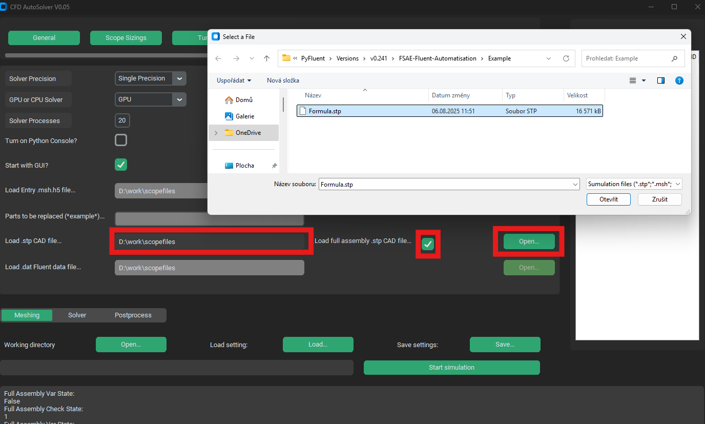
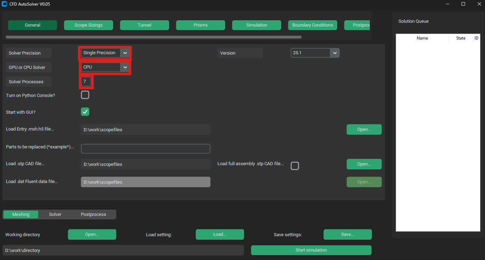
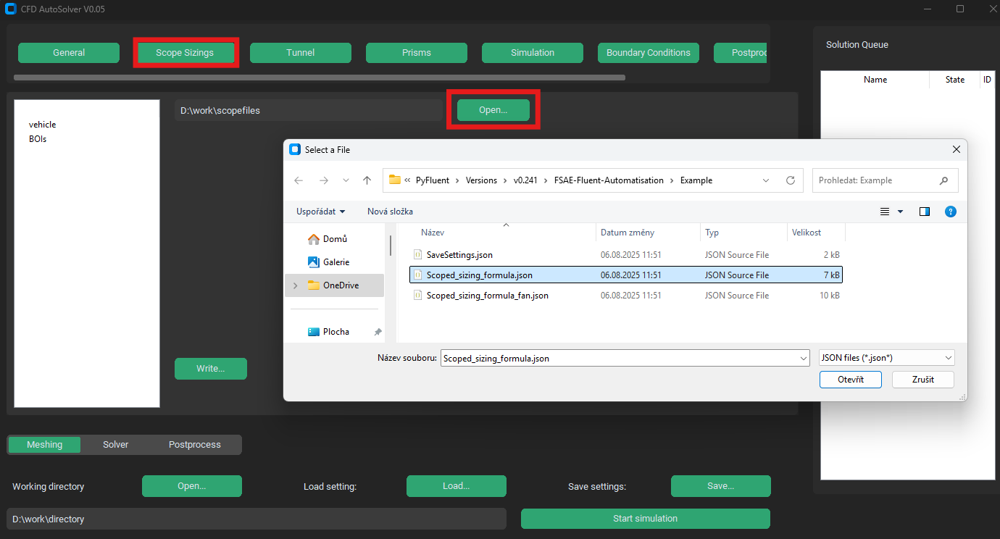
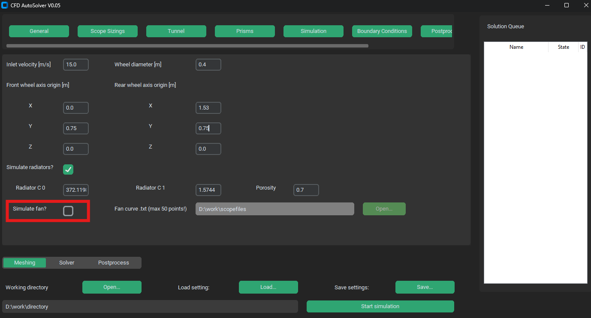
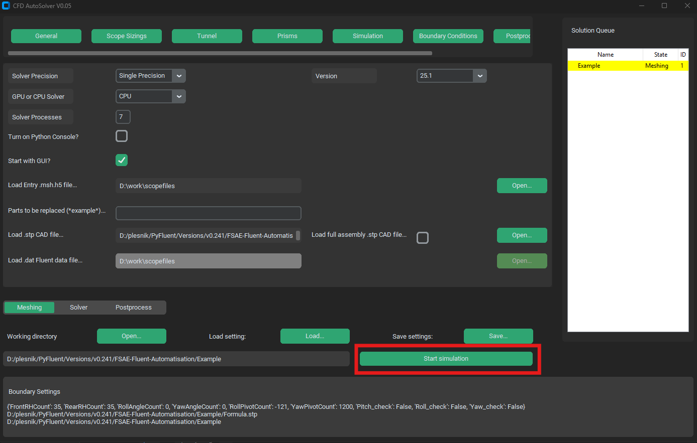

First AutoFluent project¶
First project can be an included template formula with sizing. Through this we can show entire process of starting a simulation.
Working directory setup¶
At the start of every project it is important to setup your working directory. To this directory will fluent write all save files, transcripts as well as all results. We can either write tha path to our desired directory into a text file or we can navigate to it (or create it) through explorer window by pressing on Open… button next to a Working directory text.

CAD import¶
There are two ways to import CAD file into AutoFluent, partial and full. Here we are gonna import a full CAD, meaning the CAD file contains the entire car geometry and Bodies Of Influence. First a Load full assembly .stp CAD file… check has to be activated. This switches to full CAD import. Then through Open… button or py pasting the path to a .stp file choose the formula.stp file located in the Example folder.
{kind=link}
System settings¶
As every computer has different specifications, we have to set apropriate system settings. These include number of aviable nodes (cores) and wether we want to simulate on CPU or GPU (only for high-end computaional GPUs). First choose number of solver processes which is smaller than number of CPU cores in your computer and then depending on your GPU and RAM (or GPU RAM) set precision and type of solver (single precision uses much less RAM with negligible influence on precision).
{kind=link}
Mesh sizing¶
We can either specify scoped sizing directly in GUI or load a .json file containing all mesh sizing iformations. In Example folder there already is such file which has all mesh setting properly named according to STEP file tree (details in User Guide) so we can use that. In top select menu go to Scoped sizing menu and press Open… button. In expoler go to example folder and choose Scoped_sizing_formula.json file. In left sidebar you can see a tree with mesh sizings. Feel free to compare it with a CAD tree. Prisms settings are also included in said file.
{kind=link}
Boundary conditions¶
In top select menu Boundary conditions tab we can chose inlet air velocity, wheel diameter and wheel base. These can be left as default. Since we loaded scoped sizing without fans, we need to disable fans in our computation. Uncheck the Simulate fan? check. Also feel free to try leaving it on, but remember to select a Scoped_sizing_formula_fan.json sizing file.
{kind=link}
Additional settings¶
As it is, the simualtion is ready to be sent for computing, since all the default values are set for the example model. We might be compelled to change some settings though.
# of iterations¶
By default the number of iterations is set to 1500. This might be unecessary high and its decrease could reduce the computation time drastically, especially if you computate on slow CPU. In top select menu go to Simulation menu and change the value next to Number of iterations text. Here we can also change turbulence settings and temporal settings.

Postprocessing¶
By default the postprocessing creates 5 .AVZ scenes and 444!!! cuts (pictures). This takes a lot of time so feel free to reduce the number of cuts or disable some types of cuts.

Start calculation¶
After finishing setting up of simulation we can push theese settings to simulation queue by pressing Start simulation buttn. If there is place for it (as it should with our first project) the case will quicly change from waiting status to meshing status and Fluent instance will be created. If all dependencies are installed and all settings set properly, entire simulation should run from start to end and in working directory results folder will be created.
{kind=link}